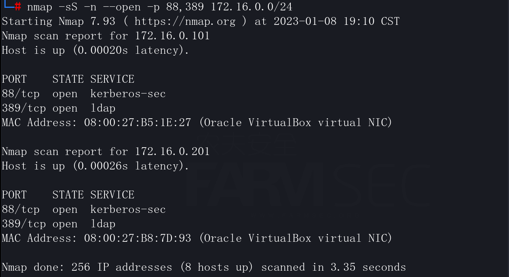

基础信息搜集
当我们通过任意的手段进入到内网时，我们对其内网的架构一无所知。此时在这种情况下，我们则需要进行对其整个所处环境进行分析。
此时我们需要进行的则是信息收集，此处与我们在互联网渗透是一个道理，信息收集的越多越全则对我们进行内网渗透时则越方便。
假设我们通过钓鱼手段，获取到一台pc用户机的控制权限，那么我们第一步需要进行的则是信息收集。
1. 判断主机所在环境
通常我们获取到一台PC机时，第一时间或去判断该机器所处的网络，目前正在与其通信的网络，是否加域等等。 根据不同情况进行进一步收集以及渗透。
一般windows机器，会有两种环境:
1.已加域的机器（域环境）
2.未加域机器，处于单机版（工作组环境）
信息搜集的相关指令：
| 指令 | 作用 | 细节点 |
|---|---|---|
| ipconfig /all | 查看当前机器网卡以及ip信息 | 主DNS后缀中会显示域名 |
| nslookup | 使用nslookup解析域名 | 查看域名解析出来的地址是否是与dns服务器是否一致 |
| systeminfo | 查看本机系统详细信息 | 在域这一列显示域名 |
| net config workstation | 查看当前登录域及域用户 | 域环境下的机器，那么在工作站域这一列显示的则是域名 |
| net time /domain | 查看域内时间 | |
| whoami /user | 当前用户权限 | |
| whoami /priv | 当前用户权限 | 不同的用户拥有不同的权限 |
| echo %PROCESSOR_ARCHITECTURE% | 判断该系统体系结构 | |
| netstat -ano | 网络连接以及端口开放情况 | |
| route print | 路由表判断网络情况 | |
| arp -a | ARP表判断网络情况 | |
| hostname | 查看当前机器名 | |
| wmic product Get name,version | 查看当前安装的程序及版本 | |
| quser | 查看在线用户 | |
| tasklist | 查看当前进程列表 | |
| tasklist /v | 查看进程对应的用户身份 | |
| tasklist /svc | 查看是否存在杀软 | WMIC /Node:localhost /Namespace:\root\SecurityCenter2 Path AntiVirusProduct Get displayName /Format:List （平替） |
| wmic startup get command,caption | 查看启动程序信息 | 通过查看启动程序信息可以知道当前机器开机的时候会运行哪些软件，这可以启动劫持。 |
| schtasks /query /fo list /v | 查看计划任务 | |
| netsh firewall show config | 查看防火墙配置 | 查看防火墙配置判断当前机器是否开了防火墙，以及防火墙配置信息。 |
2. 域内信息收集
在攻击 AD域或任意系统时，收集有助于定义谁、什么、何时和何地的有用信息至关重要。
2.1 使用nslookup
利用nslookup定位域控：
nslookup -type=srv _ldap._tcp.pdc._msdcs.fsec.com
定位域控：
nslookup -type=srv _ldap._tcp.dc._msdcs.fsec.com
其它定位域控方法：
nslookup -type=srv _kerberos._tcp.fsec.com
nslookup -type=srv _kpasswd._tcp.fsec.com
nslookup -type=srv _ldap._tcp.fsec.com
2.2 端口扫描
在AD域中，可以很容易地发现域控制器，具体取决于它们开启的服务。每个服务通常都可以访问特定的 TCP 和/或 UDP 端口。
使用nmap进行端口扫描：
nmap -sS -n --open -p 88,389 172.16.0.0/24

2.3域内的相关命令
| 指令 | 作用 | 细节点 |
|---|---|---|
| nltest /domain_trusts /all_trusts /v | 查询域信任列表 | 可以查询到有多少个域以及域名 |
| nltest /dsgetdc:fsec | 查询域控以及对应ip | 快速定位域控机器 |
| net user /do | 获取域用户列表 | 获取到域内所有用户，从此判断域的大小 |
| net group “domain admins” /domain | 获取域管理员列表 | 快速定位域管 |
| net localgroup administrators /domain | 登录本机的域管理员 | 该条命令会显示本地管理员以及域管理员，需要区别一下 |
| net user xxx /domain | 查询某个域用户的详细信息 | |
| net group /domain | 查询域内用户组列表 | 有的域内可能会有部分的分组，比如信息组，财务组 |
| net group caiwu /domain | 查询域内某个组下用户 | (查询caiwu这个用户组下的用户) |
| net accounts /domain | 查询域密码策略 | |
| net group “domain controllers” /domain | 查询所有域控列表 | 想要知道域控的ip是多少时，那么直接ping机器名即可 |
| net view \\ net group “domain computers” /domain | 查询域内机器列表 |
2.4 查找机器上保存的敏感密码以及敏感文件
根据文件名称搜索:
dir /b /s user.*,pass.*,username.*,password.*,config.*
#利用dir命令查找当前目录下文件名称中包含（user.,pass.,username.,password.,config.）关键字的文件。
for /r D:\ %i in (user.*,pass.*,username.*,password.*,config.*) do @echo %i
#利用for循环命令查找指定目录下文件名称中包含（user.,pass.,username.,password.,config.关键字的文件。
findstr /c:"user" /c:"pass" /c:"username" /c:"password" /si *.txt (不建议*.*，可自行指定后缀名进行查找)
#利用findstr命令查找当前目录下的⽂件⾥有没有 user,pass,username,password 等字段内容